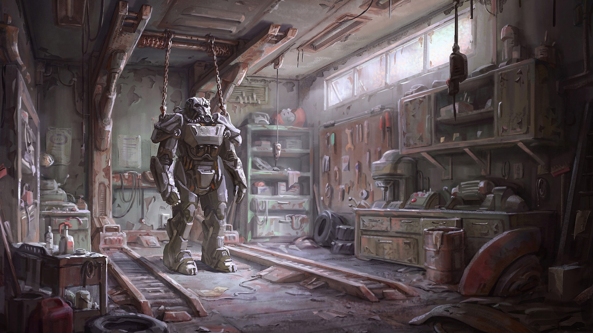

Historia
"Fallout 4" es un videojuego de rol de acción desarrollado por Bethesda Game Studios y publicado por Bethesda Softworks. Fue lanzado en noviembre de 2015 para múltiples plataformas, incluyendo Microsoft Windows, PlayStation 4 y Xbox One. La historia de "Fallout 4" se desarrolla en un mundo post-apocalíptico que ha sido devastado por una guerra nuclear. El juego tiene lugar en el año 2287, más de 200 años después de la Gran Guerra nuclear que destruyó la civilización moderna. El jugador asume el papel de un sobreviviente de la guerra, que emerge de un refugio subterráneo conocido como "Refugio 111" en un área conocida como la Commonwealth, que es lo que solía ser el estado de Massachusetts en los Estados Unidos. El personaje del jugador se embarca en una búsqueda para encontrar a su hijo perdido y se ve envuelto en conflictos entre varias facciones que luchan por el control de la Commonwealth. Estas facciones incluyen a los Minutemen, una milicia que busca proteger a los habitantes comunes de la Commonwealth; la Hermandad del Acero, una organización militarista con tecnología avanzada; el Instituto, una organización científica que crea y manipula androides llamados "sintéticos"; y los Feroces, una banda de saqueadores y asesinos.
La jugabilidad de Fallout 4 es muy similar a la de sus predecesores ( Fallout 3 y Fallout New Vegas). Como es común en el título, puedes volver a elegir entre un modo en primera persona y tercera persona, y donde puedes ir con total libertad a cualquier punto del mapa. El juego cuenta con 111 000 líneas de diálogo, y un sistema de creación mucho más profundo implementado en todas las armas del juego. Los enemigos más comunes, como las ratas topos, saqueadores, supermutantes, tochomoscas, sanguinarios y los necrófagos están presentes en el título. También regresan los acompañantes, como Albóndiga, el perro fiel. Sin embargo, existen otros trece compañeros disponibles (incluyendo a los de los DLC) en todo el yermo. A diferencia de los juegos anteriores, ninguno de los compañeros podrá morir y solo se puede viajar con uno de ellos a la vez. Dependiendo de lo que hagamos, la amistad con los acompañantes aumentará o descenderá. Adicionalmente, el personaje podrá tener un romance, pero solo con acompañantes humanos. Cuanto mayor sea el carisma, más oportunidades tendrá de que ocurra el romance. Al lograrlo, los compañeros te otorgan una bonificación especial.

Los jugadores podrán personalizar sus armas y modificarlas de muchas formas. Además, la servoarmadura, vista en Fallout 3, también está disponible en el título, la cual puede usarse con celdas de energías como combustible. La servoarmadura también puede modificarse, así como añadirle elementos adicionales para mejorarla y con varios tipos como T-41, T-45, X-41, etc. Una nueva característica de Fallout 4 es la habilidad de crear y construir asentamientos y edificios recuperados. También se pueden reciclar objetos chatarra y utilizarlos para construir nuevas estructuras. Dependiendo de la calidad del asentamiento, la cantidad de comida y agua, la energía eléctrica, las defensas y el número de habitantes, el porcentaje de felicidad aumentara progresivamente. Al recuperar un asentamiento, el personaje debe fabricar una baliza para atraer a más gente al lugar, siempre y cuando tenga los recursos necesarios para cuidar de ellos. Estos asentamientos pueden ser atacados en cualquier momento por diferentes enemigos (depende el nivel que tengas y el número de defensa del asentamiento), por lo que el jugador deberá acudir en su rescate para rechazar a los invasores. Por lo tanto el jugador puede construir defensas alrededor de los asentamientos, como torretas y trampas.
Por supuesto, también regresa el Pip-Boy, una herramienta muy útil en la franquicia de Fallout. El Pip-Boy permite al jugador acceder a información relevante, como estadísticas, mapas, datos, objetos y objetivos. En todo el yermo de Fallout 4 podrán encontrarse cintas de audio y reproducirlas en el Pip-Boy. Otra característica común del Pip-Boy es el Sistema V.A.T.S. (Vault-Tec Assisted Targeting System). Este sistema desempeña un papel importante a la hora de combatir. Al usarlo, la acción seguirá desarrollándose en tiempo real pero con mucha lentitud, a diferencia de sus predecesores, ya que al usar el sistema V.A.T.S. el tiempo se paralizaba por completo. Este sistema te permite ser más preciso a la hora de atacar a un enemigo, permitiendo apuntar a cualquier extremidad, ya sea brazos, cabeza, pecho o piernas. Dependiendo del porcentaje de acierto, el daño será mucho mayor. Además, al disparar contra el arma del enemigo podrás desarmarlo por completo. Otra novedad del sistema V.A.T.S. es que ahora los daños críticos pueden realizarse manualmente por el jugador y no de forma aleatoria. Como es común en Fallout, el jugador podrá distribuir puntos a su personaje con el sistema S.P.E.C.I.A.L. al comenzar el juego y al subir de nivel. Este sistema contiene siete atributos: Fuerza, Percepción, Resistencia, Carisma, Inteligencia, Agilidad y Suerte. Al asignarle puntos a un atributo, se desbloquean varias habilidades sobre la base de ese atributo. Además, existen 275 niveles que pueden desbloquearse.En esta entrega, no hay nivel máximo y se podrá seguir jugando una vez completada la historia principal.